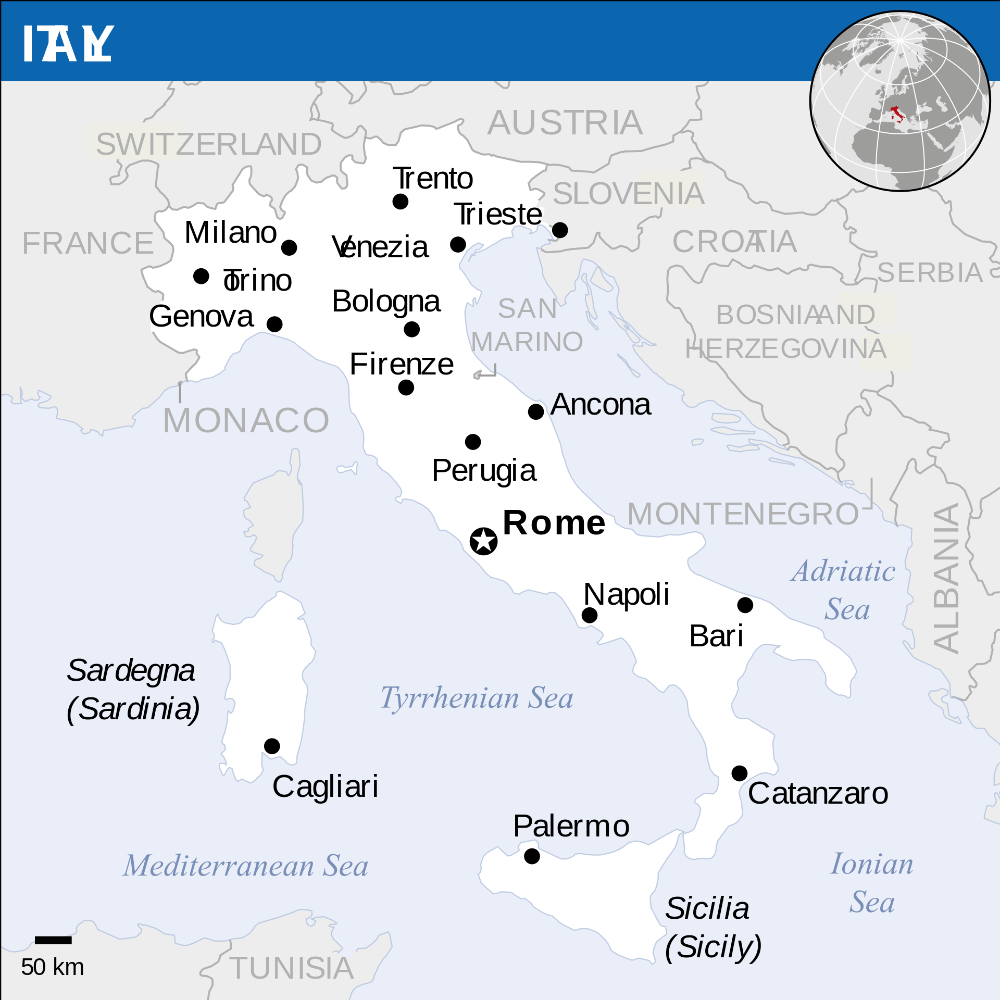
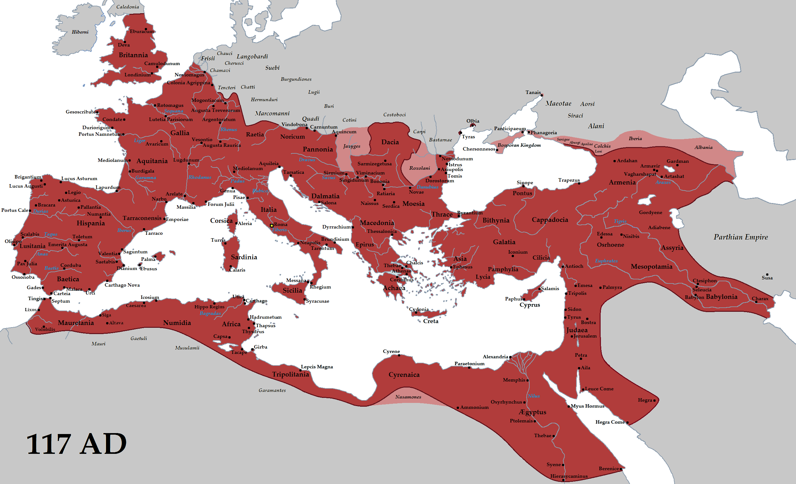

Itália
Capital: Roma
Língua: Italiano
Área: 301338 km2
População: 60 665 551 habitantes
Moeda: Euro
Presidente atual: Sergio Mattarella
Descrição
Itália, oficialmente República Italiana, é uma república parlamentar unitária localizada no centro-sul da Europa. Ao norte, faz fronteira com França, Suíça, Áustria e Eslovénia ao longo dos Alpes. A parte sul consiste na totalidade da península Itálica, Sicília, Sardenha, as duas maiores ilhas no mar Mediterrâneo, e muitas outras ilhas menores ficam no entorno do território italiano. Os Estados independentes de San Marino e do Vaticano são enclaves no interior da Itália, enquanto Campione d'Italia é um ex-clave italiano na Suíça.
O território do país abrange cerca de 301 338 km² e a maior parte do seu território tem um clima temperado sazonal. Com 60,8 milhões de habitantes em 2015, é a quinta nação mais populosa da Europa e a 23.ª do mundo.
História
A história de Itália influenciou fortemente a cultura e o desenvolvimento social, tanto na Europa como no resto do mundo. Foi o berço da civilização etrusca, da Magna Grécia, da civilização romana, da Igreja Católica, das repúblicas marítimas, do humanismo, do Renascimento e do fascismo. Foi o lugar de nascimento de muitos artistas, cientistas, músicos, literatos, exploradores.
Até hoje, o que mais ênfase traz ao país são os vestígios da antiga civilização romana que se propagou a toda a Europa:

Demografia
Cerca de 95% da população italiana tem origem na península Itálica. Os italianos são descendentes de uma grande quantidade de povos que se estabeleceram na península ao longo da história. Os italianos são uma mistura de povos que já viviam na região, incluindo os povos latinos (a oeste), os sabinos (no vale superior do Tibre), os úmbrios (no centro), os samnitas (no sul), oscos, entre outros, como os etruscos que se estabeleceram no centro do país, os gregos no sul e os celtas no norte.
Posteriormente, estabeleceram-se no norte povos germânicos (ostrogodos, visigodos, lombardos) e, no sul, sarracenos (de origem árabe e norte-africana) e os normandos (de origem escandinava). Esses últimos deixaram uma menor influência na população italiana.
5 Turismo
O turismo também é muito importante para a economia italiana: com mais de 37 milhões de turistas por ano em 2004, a Itália é classificada como o quinto principal destino turístico do mundo. Em 2006, Roma era a terceira cidade mais visitada da União Europeia, sendo constantemente considerada como uma das mais belas cidades antigas do mundo. Veneza também é considerada a cidade mais bonita do mundo, segundo o New York Times, que descreve a cidade como "sem dúvida a mais bela cidade construída pelo homem". O país também foi classificado com tendo a sexta melhor reputação internacional de 2009.
Como autor da página e visitante deste país no ano decorrente, confirmo todas as altas expetativas e opiniões fantásticas sobre a cultura e arte presente neste país, nomeadamente nas cidades que visitei.


Developed by: José Costa